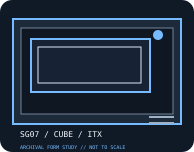

[ IDENTIFIED ENCLOSURE // SG07 ]
SilverStone Sugo SG07
A compact 14.8 L Mini-ITX performance cube built around an included 600 W SFX power supply and a large top intake fan.

MODEL / FIT NOTE: Confirm whether the original bundled PSU is still present; later SFX replacement does not automatically include the SG07-specific cables, bracket or airflow arrangement.
Mechanical specifications and fit
| Model and revision | SilverStone Sugo SG07 (chassis model SG07). |
|---|---|
| Dimensions / volume | 222 × 190 × 350 mm (W × H × D); approximately 14.8 L. |
| Motherboard / slots | Mini-ITX motherboard; two expansion slots. |
| Power supply | Supplied 600 W SFX power supply in the original package; replacement must be SFX form factor and fit the dedicated bracket. |
| Graphics-card clearance | Graphics card up to 310 mm long; maximum thickness is two slots (check the card power plugs against the drive cage). |
| CPU-cooler clearance | CPU cooler up to 117 mm high. |
| Radiator clearance | No manufacturer-specified radiator fit; the 180 mm intake fan is the documented cooling arrangement, so do not infer radiator compatibility from fan mounting points. |
| Drive clearance / bays | Two 3.5-inch and two 2.5-inch internal mounts; drive-cage arrangement can affect long-card routing. |
Compatibility notes
Published maxima are envelopes, not a guarantee that every maximum fits simultaneously. Measure the selected card, PSU body and cable exits, CPU cooler and radiator/fan stack together; confirm drive-cage position and panel closure before purchase or assembly.
- Install only the motherboard standoffs matching the supported board layout and verify no unused standoff touches the PCB.
- Check power-plug bend radius, graphics-card thickness and intake clearance against the exact panel and drive-bracket configuration.
- Use the cited manufacturer manual for installation sequence and revision-specific bracket placement; do not infer part interchangeability from a shared product family.
Manufacturer specifications and manual
- SilverStone SilverStone Sugo SG07 official product specificationsManufacturer product page for the identified chassis model and its published mechanical envelope.
- SilverStone SG07 official installation manual (PDF)Manufacturer-hosted model manual for assembly, bracket positioning and fit verification.